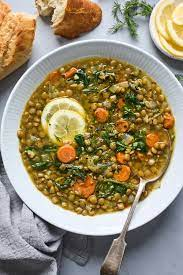

Lentil Soup

Description
This lentil soup is easy to make and filling, with mostly pantry ingredients as a base.
Ingredients
- Onions
- Garlic
- Carrots
- Lemons
- Lentils
- Spinach
- Vegetable Stock
- Spinach
- Variety of spices (tumeric, cumin, paprika)
- Add olive oil to the pan, on a medium-low heat.
- Sweat the onions and finely chopped carrot.
- Add the garlic, and cook for 30 seconds.
- Add and gently toast the spices.
- Add the vegetable stock and lentils, and bring to a boil.
- Cook for around 30 minutes, or until the lentils are almost done.
- Add the spinach for the last 5 minutes of cooking.
- Taste for salt, and add pepper if desired.
- When serving, add lemon juice and (optionally) fresh parsley.